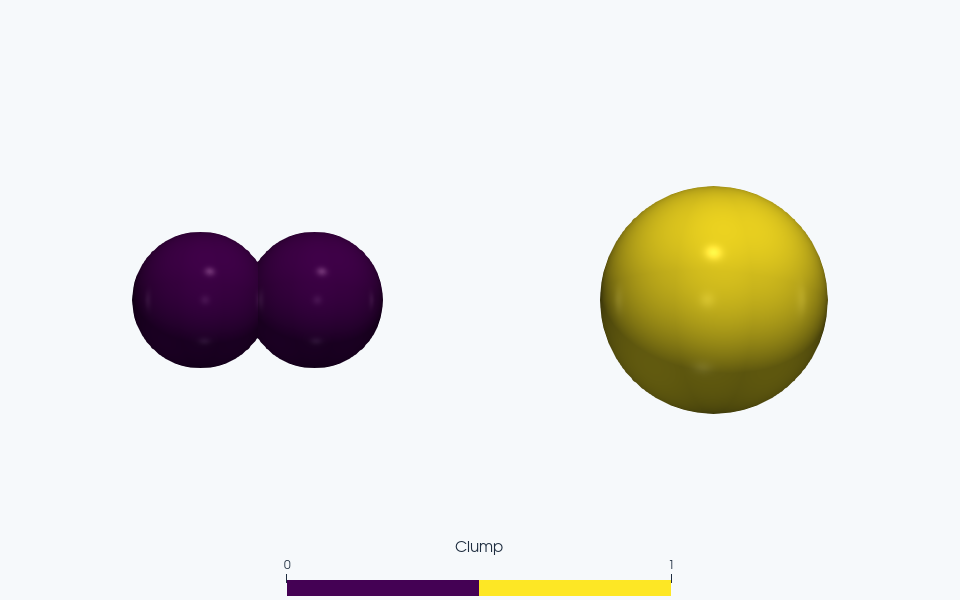
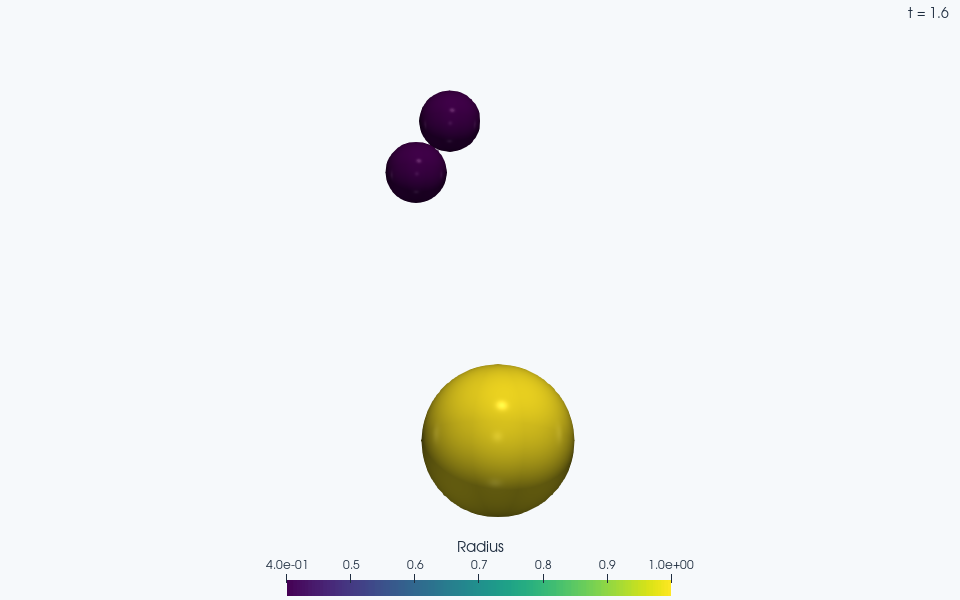

Note
Go to the end to download the full example code.
Clumps (Rigid Bodies)#
A clump is a rigid body assembled from multiple spheres that share the same
clump_id. Every sphere in a clump stores the
same body-level fields (COM position, orientation, velocity, angular velocity,
total mass, total inertia, aggregated force/torque) while keeping its own
body-frame offset pos_p, radius, and
material/species IDs.
The Clump Data Model#
Field |
Shared by clump |
Per-sphere |
|---|---|---|
✓ |
||
✓ |
||
✓ |
||
✓ |
Lab-frame sphere positions are computed on access from COM and body offsets:
Note that both create() and
add_clump() take the center of mass via the
pos= parameter (which populates pos_c) and offsets via pos_p=.
import jax.numpy as jnp
import jaxdem as jdem
Creating Clumps Manually and with add_clump()#
Build a dumbbell clump (clump 0) beside a free sphere (clump 1):
state = jdem.State.create(
pos=jnp.array([[2.0, 0.0], [2.0, 0.0], [6.0, 0.0]]), # COM (pos_c)
pos_p=jnp.array([[-0.5, 0.0], [0.5, 0.0], [0.0, 0.0]]),
rad=jnp.array([0.6, 0.6, 1.0]),
clump_id=jnp.array([0, 0, 1]),
)
print("clump_id:", state.clump_id)
print("lab pos :\n", state.pos)
# Keep this construction snapshot for the initial ParaView illustration.
scene_preview_state = state
scene_preview_system = jdem.System.create(state=state, collider_type="naive")
clump_id: [0 0 1]
lab pos :
[[1.5 0. ]
[2.5 0. ]
[6. 0. ]]


The two overlapping disks share one clump ID and move as a rigid body beside a single sphere.
add_clump() appends a new clump to an existing
state, broadcasts shared fields (vel, mass, volume, …) to all
members, and assigns a fresh clump_id:
state_base = jdem.State.create(pos=jnp.array([[0.0, 0.0]]), rad=jnp.array([1.0]))
state_with_clump = jdem.State.add_clump(
state_base,
pos=jnp.array([[3.0, 0.0], [3.0, 0.0]]),
pos_p=jnp.array([[-0.4, 0.0], [0.4, 0.0]]),
rad=jnp.array([0.5, 0.5]),
vel=jnp.array([1.0, 0.0]),
mass=jnp.array(2.0),
)
print("After add_clump: N =", state_with_clump.N, "| clump_ids =", state_with_clump.clump_id)
After add_clump: N = 3 | clump_ids = [0 1 1]
Computing Union Mass, COM, and Principal Inertia#
Member spheres inside a clump often overlap, so summing individual sphere
masses would double-count shared volume.
compute_clump_properties() computes the exact
material union \(\Omega\) (analytically in 2D and for simple 3D overlaps,
and via adaptive quadrature controlled by n_samples for general 3D
overlaps) and diagonalizes the inertia tensor into principal axes while
keeping every sphere at the same lab-frame position:
Call it once during host-side setup (outside jax.jit). For complex 3D
clumps, check convergence by increasing n_samples (e.g. 50_000 →
200_000). For ready-made multi-sphere shapes with core_type options
("hollow", "solid", "phantom"), see
Rigid geometric-asperity clumps: step-by-step pipeline.
mat_table = jdem.MaterialTable.from_materials(
[jdem.Material.create("elastic", density=2.0, young=1e4, poisson=0.3)]
)
# 2D overlapping dumbbell:
clump_2d = jdem.State.create(
pos=jnp.array([[0.0, 0.0], [0.8, 0.0]]),
rad=jnp.array([0.5, 0.5]),
clump_id=jnp.array([0, 0]),
mat_table=mat_table,
)
clump_2d = jdem.utils.compute_clump_properties(clump_2d, mat_table)
print("2D clump: COM =", clump_2d.pos_c[0], "| mass =", float(clump_2d.mass[0]), "| Izz =", clump_2d.inertia[0])
# 3D overlapping trimer (inertia has shape (N, 3) principal moments):
clump_3d = jdem.State.create(
pos=jnp.array([[0.0, 0.0, 0.0], [0.7, 0.0, 0.0], [0.35, 0.6, 0.0]]),
rad=jnp.full(3, 0.5),
clump_id=jnp.zeros(3, dtype=int),
mat_table=mat_table,
)
clump_3d = jdem.utils.compute_clump_properties(clump_3d, mat_table, n_samples=50_000)
print("3D clump: mass =", float(clump_3d.mass[0]), "| principal inertia =", clump_3d.inertia[0])
2D clump: COM = [4.00000000e-01 1.48038716e-18] | mass = 2.9780915447965084 | Izz = [0.89195609]
3D clump: mass = 2.779480133299115 | principal inertia = [0.54449708 0.5493509 0.79621368]
Because mass and inertia are broadcast to every member slot, select
one representative per clump (e.g. via jnp.unique or dividing by member
counts) when computing body-level totals such as total mass or kinetic energy:
counts = jnp.bincount(state.clump_id, length=state.N)[state.clump_id]
total_mass = jnp.sum(state.mass / counts)
print("Total mass without double-counting members:", float(total_mass))
Total mass without double-counting members: 2.0
Collisions, Force Aggregation, and Integration#
Same-clump exclusion: All colliders automatically skip pairs with the same
clump_id(unlikebond_id, which only masks bonded vertices in deformable meshes — see Deformable Particles).Force & torque aggregation:
ForceManageradds lever-arm torques \(\mathbf{r}_p \times \mathbf{F}\), sums forces and torques perclump_idviasegment_sum, and broadcasts the totals back to every member.Integration & walls: Integrators update shared COM fields directly, and
ReflectDomainaggregates wall-impact impulses across the whole clump.
Running a Clump Impact Simulation#
Drop a tilted dumbbell onto a fixed spherical floor under gravity. Asymmetric impact transfers both linear rebound and angular velocity to the rigid body:
state_sim = jdem.State.create(
pos=jnp.array([[0.0, 0.0]]),
rad=jnp.array([1.0]),
fixed=jnp.array([True]),
mat_table=mat_table,
)
state_sim = jdem.State.add_clump(
state_sim,
pos=jnp.array([[0.0, 4.0], [0.0, 4.0]]),
pos_p=0.4 * jnp.array([[-jnp.cos(0.3), -jnp.sin(0.3)], [jnp.cos(0.3), jnp.sin(0.3)]]),
rad=jnp.array([0.4, 0.4]),
)
state_sim = jdem.utils.compute_clump_properties(state_sim, mat_table)
system_sim = jdem.System.create(
state_sim.shape,
dt=1e-3,
force_model_type="spring",
collider_type="naive",
mat_table=mat_table,
force_manager_kw={"gravity": jnp.array([0.0, -9.81])},
)
state_sim, system_sim = jdem.System.initialize(state_sim, system_sim)
state_sim, system_sim, (scene_states, scene_systems) = jdem.System.trajectory_rollout(
state_sim, system_sim, strides=jnp.asarray([0] + [40] * 40)
)
system_sim.check_overflow()
print("Final dumbbell COM:", state_sim.pos_c[1])
print("Peak upward rebound speed:", float(scene_states.vel[:, 1, 1].max()))
print("Peak angular speed:", float(jnp.abs(scene_states.ang_vel[:, 1]).max()))

ParaView rendering of this run’s VTKWriter output.
Final dumbbell COM: [-0.84750918 3.836828 ]
Peak upward rebound speed: 6.803632769489071
Peak angular speed: 13.65438631915448
Common Pitfalls#
Skipping
compute_clump_properties(): manual clumps keep single-sphere mass and inertia until you compute union properties.Accidental duplicate ``clump_id``: two separate bodies with the same ID fuse into one non-colliding rigid body.
Non-contiguous ``clump_id`` after manual edits: aggregation indexes
Nsegments, so IDs must stay in[0, N).Mismatched shared fields: if editing
vel,pos_c, orqmanually, update every member slot of the clump identically (or useadd_clump()).
Total running time of the script: (0 minutes 14.446 seconds)